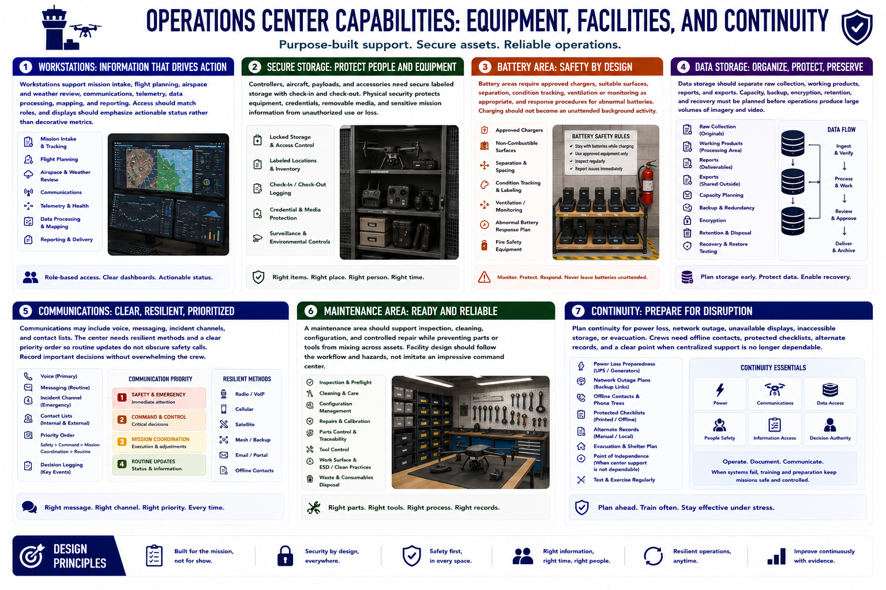

Facilities, Equipment, and Systems
Connecting to LMS... Progress: in progress

Narration
Workstations support mission intake, flight planning, airspace and weather review, communications, telemetry, data processing, mapping, and reporting. Access should match roles, and displays should emphasize actionable status rather than decorative metrics.
Controllers, aircraft, payloads, and accessories need secure labeled storage with check-in and check-out. Physical security protects equipment, credentials, removable media, and sensitive mission information from unauthorized use or loss.
Battery areas require approved chargers, suitable surfaces, separation, condition tracking, ventilation or monitoring as appropriate, and response procedures for abnormal batteries. Charging should not become an unattended background activity.
Data storage should separate raw collection, working products, reports, and exports. Capacity, backup, encryption, retention, and recovery must be planned before operations produce large volumes of imagery and video.
Communications may include voice, messaging, incident channels, and contact lists. The center needs resilient methods and a clear priority order so routine updates do not obscure safety calls. Record important decisions without overwhelming the crew.
A maintenance area should support inspection, cleaning, configuration, and controlled repair while preventing parts or tools from mixing across assets. Facility design should follow the workflow and hazards, not imitate an impressive command center.
Plan continuity for power loss, network outage, unavailable displays, inaccessible storage, or evacuation. Crews need offline contacts, protected checklists, alternate records, and a clear point when centralized support is no longer dependable.